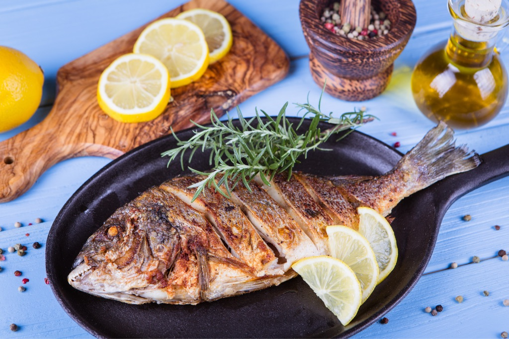
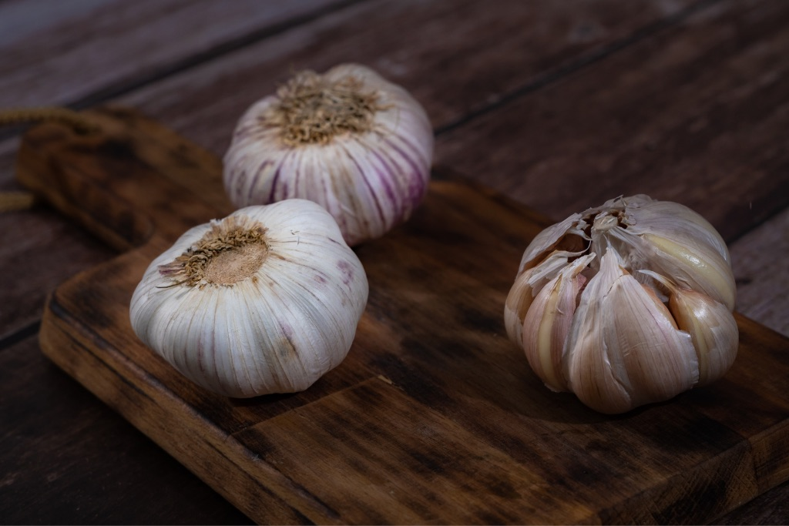
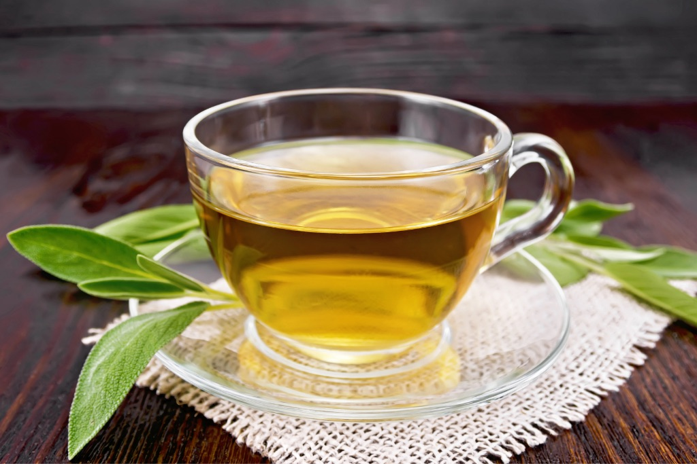
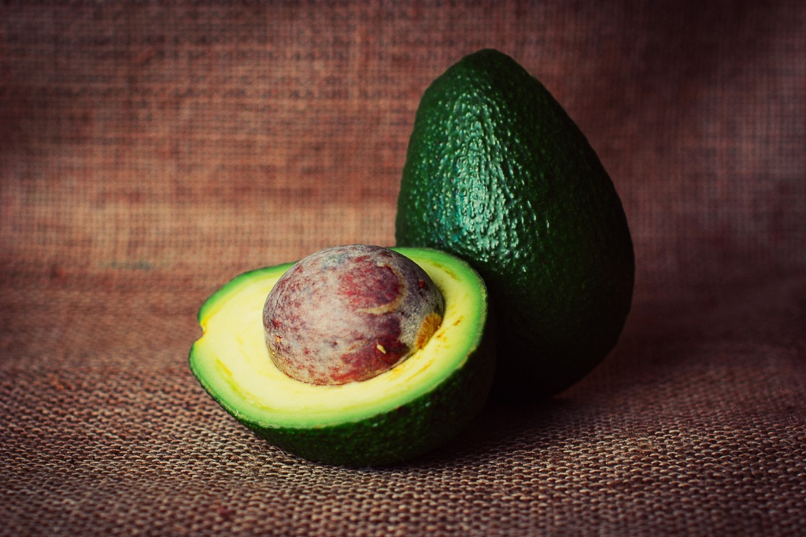
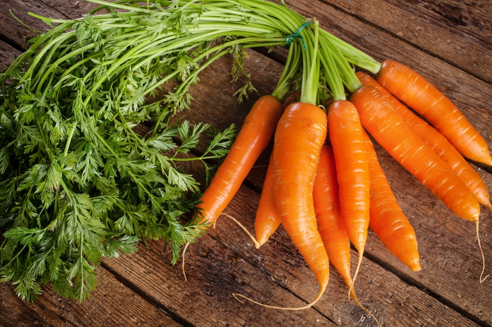
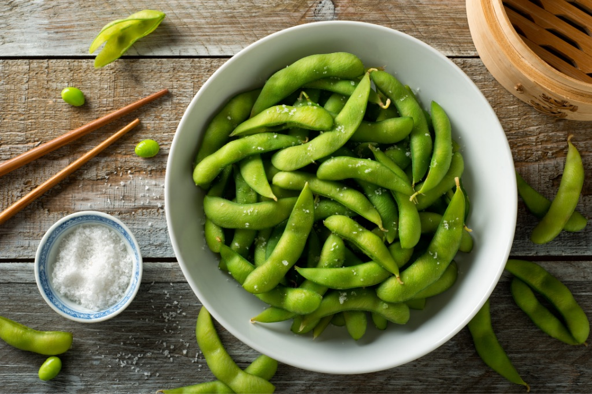
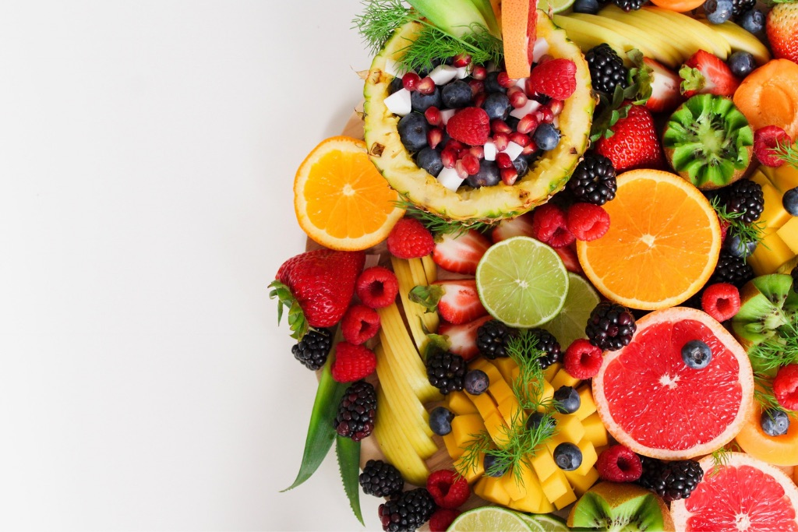
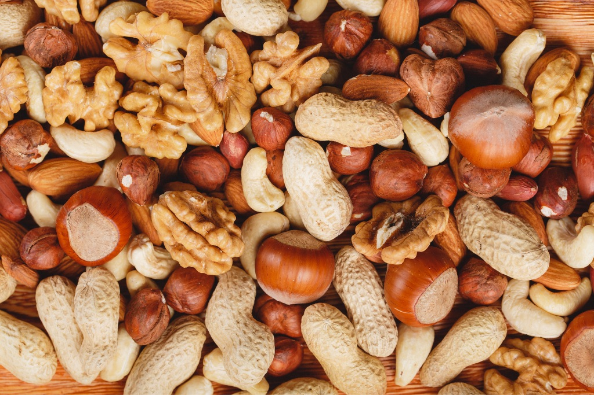
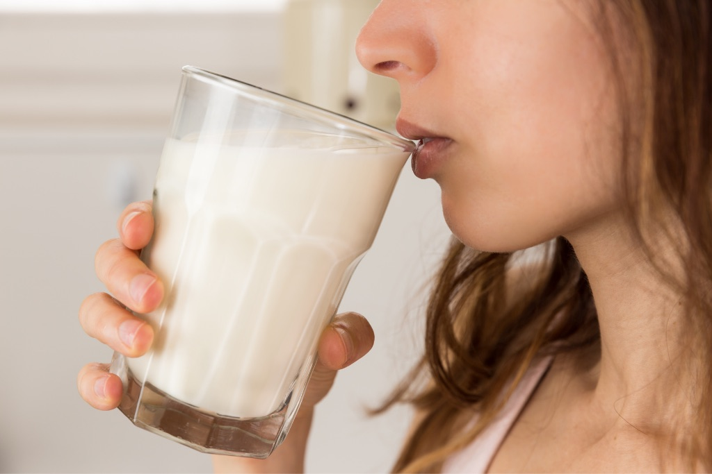
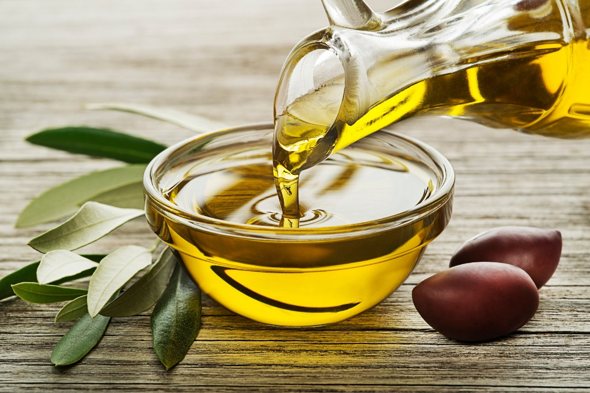

10 найкорисніших продуктів харчування для здоров'я
Основою міцного здоров'я є спорт, щоденне вживання необхідної кількості води і правильно підібраний раціон, що включає корисні та натуральні продукти. На думку вчених і дієтологів, вказані нижче продукти входять до десятки найкорисніших для організму та відповідних як жінкам, так і чоловікам.
Риба
Морська риба містить рекордну кількість Омега-3, Омега-6 і заліза. Ці елементи допомагають нормалізувати холестерин, знизити ризик інфаркту, беруть участь у гемопоезі, покращують стан волосся, попереджають втрату пам'яті та навіть деякі види онкологічних захворювань. Риба так само як і м'ясо містить білки, жири та мінеральні речовини, але засвоюється організмом легше. Особливо корисним вважається лосось, у ньому міститься максимальна кількість корисних речовин. Далі за списком йдуть тунець, скумбрія та оселедець – понад 8% жиру. Їх варто вживати 1-2 рази на тиждень.
Часник
До складу часнику входять важливі речовини - калій, кальцій, фосфор, вітаміни групи В і С, селен, марганець, йод та ефірні олії. Цілющі властивості продукту:
- підтримує роботу імунної системи та мозку;
- допомагає позбавитися хвороботворної мікрофлори в кишечнику;
- покращує травлення та прискорює обмінні процеси;
- знижує рівень поганого холестерину, попереджає утворення тромбів та інфаркту;
- запобігає розвитку раку, виводячи з організму вільні радикали, які провокують неправильний розвиток клітин;
- допомагає при хворобах печінки та жовчного міхура - розріджує жовч, тим самим запобігаючи утворенню каменів;
- усуває запальні процеси в сечостатевій системі;
- використовується як спосіб профілактики та лікування гельмінтозів у дітей.
Для отримання максимального ефекту їсти часник потрібно у сирому вигляді.
Зелений чай
Зелений чай — лідер у топ найкорисніших продуктів харчування. Має високий вміст сильних природних антиоксидантів — поліфенолів. Особливим різновидом цієї речовини є катехіни, що входять до складу зеленого чаю. Вони виводять вільні радикали, що впливають на клітини, і є причиною хвороб та старіння організму. Також до складу корисного напою входять вітаміни А, С, В, К, Р, F та мікроелементи. Вони покращують здоров'я волосся, шкіри, роботу нервової системи, регулюють рівень цукру в крові та зміцнюють судини, допомагають функціонуванню нирок та обміну речовин. 20 видів амінокислот та глютамінова кислота стимулюють роботу мозку та відновлюють нервову систему. Кофеїн та L-теанін тонізують, а теобромін допомагає схуднути, маючи сечогінну дію.
Авокадо
М'якуш плода містить безліч мінералів (кальцій, фосфор, залізо, йод та інші), вітамінів (групи В, Е, А, F, С, фолієва кислота), клітковини та насичених жирів. Авокадо прискорює засвоюваність поживних речовин, нормалізує вагу, знижує рівень холестерину та цукру в крові завдяки ненасиченим жирним кислотам. Цей продукт рекомендований людям із захворюваннями серцево-судинної системи та ШКТ. Через високий вміст клітковини плід особливо корисний тим, хто має схильність до запорів, оскільки харчові волокна покращують стан кишечника і є живильним середовищем для корисних бактерій.
Морква
Це унікальний овоч, який є джерелом цінних поживних речовин. Основні компоненти, що містяться в моркві та дозволяють організму бути здоровим:
- Кератин — нормалізує діяльність репродуктивних органів та зір. За результатами дослідження ризик розвитку з віком курячої сліпоти знижується на 40% у людей, які їли моркву у великій кількості.
- Біотин — забезпечує зростання та оновлення клітин.
- Пантотенова та фолієва кислоти — беруть участь у процесі розщеплення жирів та вуглеводів, виробництві еритроцитів та статевих гормонів, синтезі холестерину.
- Вітаміни групи С, В1, В2, В3, Е, К та РP — покращують роботу імунної системи.
- Фітонциди — природні антибіотики, що пригнічують зростання бактерій та вірусів.
- Ефірні олії — покращують травлення, зміцнюють імунітет, сприяють очищенню організму, підтримують серцево-судинну систему.
- Мінерали: калій, магній, цинк, кальцій та йод – покращують кровообіг і знижують навантаження на серцево-судинну систему. Це основні помічники нормального функціонування організму. Вони не виробляються власне організмом і надходять лише через їжу.
- Здорове серце та судини, міцний імунітет, хороша робота травної системи, профілактика розвитку онкологічних захворювань, здорова шкіра, очі, зуби та ясна — список корисних властивостей моркви можна продовжувати нескінченно.
Бобові
У квасолі, гороху та сочевиці міститься велика кількість рослинного білка, тому вони увійшли до 10 найкорисніших продуктів для здоров'я людини. Застосування бобів у їжу допомагає нормалізувати рівень холестерину та знизити кров'яний тиск. Страви із цього продукту підходять для профілактики хвороб серця, діабету, остеопорозу. Також вони ефективно очищають організм і стимулюють роботу кишечника, швидко вгамовують голод і надають енергії. Бобові культури багаті на вітаміни В і А, вуглеводи і білки, містять багато клітковини. Такий склад допомагає покращити стан кісткових тканин, покращує гормональний фон, уповільнює процеси старіння, сприяє покращенню мозкової активності.
Фрукти
Фрукти багаті на клітковину, мають низьку калорійність, допомагають зменшити вагу, знизити рівень холестерину, очистити кишечник від токсинів. Щоб бути енергійним та здоровим, обов'язково необхідно вживати яблука, хурму, апельсини, ківі, банани та гранати.
-
Яблуко
Цей фрукт допомагає налагодити перистальтику кишечнику та вивести токсини з організму. Завдяки вмісту вітаміну А, С, В1, В2, РР та Е, а також магнію, фосфору, йоду, заліза, кальцію та цинку, зміцнюють серцево-судинну систему та покращують роботу мозку.
PPPPPPPPPPPPPPPPP
PPPPPPPPPPPPPPPPP
-
Хурма
Хурма сприяє травленню, підвищує еластичність судин, покращує зір, підтримує імунітет, забезпечує організм кальцієм, запобігає анемії. У ньому містяться вітаміни А, З, Е, В6, калій, мідь, магній.
-
Апельсин
Крім того, що це смачний і ароматний плід, він ще багатий на вітаміни, бета-каротин, фолієву кислоту і мінеральні речовини, які необхідні організму людини. До основних корисних властивостей відносяться:
- посилення роботи кишечника та зменшення процесів гниття;
- профілактика авітамінозу;
- зміцнення імунітету;
- зниження рівня холестерину;
- має антимікробну та протизапальну дію;
- сприяє регенерації кісткової тканини.
Запах апельсина покращує настрій і має седативну дію.
-
Ківі
Один плід насичує організм людини добовою дозою вітаміну С. До складу входить філлохінон – покращує згортання крові та синтез білків. Ківі збагачений залізом, цинком, калієм, магнієм, натрієм і фосфором - вони допомагають зміцнити імунітет, борються із застудними захворюваннями, збільшують стресостійкість організму. Також вживання цієї ягоди знижує ризик розвитку онкологічних захворювань та покращує роботу сечовидільної системи.
-
Банан
В одному банані міститься приблизно 13% необхідної добової дози калію. Цей мінерал не дозволяє утворюватися каменям у нирках, нормалізує роботу серця та кров'яний тиск. Бета-каротин, кальцій та калій нормалізують роботу кишечника та серцевої системи, зменшує рівень «поганого» холестерину. Банани знижують рівень стресу, є натуральним антидепресантом, борються із сезонною депресією та поганим настроєм. Серотонін і допамін допомагають заспокоїтись після нервового зриву або важкого дня.
-
Гранат
Фрукт підвищує імунітет та захищає від вірусів та застудних захворювань. Має протибактерицидну та протизапальну дію, виводить з організму радіоактивні речовини та токсини, ефективний при профілактиці туберкульозу. Підвищує гемоглобін, покращує функції щитовидної залози. Гранат містить рослинний гормон естроген, тому він особливо корисний жінкам під час клімаксу. Також плід корисний для волосся та шкіри, вітаміни та мікроелементи допомагають дбати про красу та молодість.
Горіхи
Горіхи покращують функції щитоподібної залози, сприяють засвоєнню заліза, знижують рівень стресу, використовуються для профілактики анемії. Мінерали та вітаміни, що входять до їх складу, зміцнюють кісткову тканину.
Найкориснішими вважаються:
- кешью — допомагає засвоєнню мінералів та вітамінів;
- волоський горіх — у складі є вітамін Е, поліфенол та Омега-3, що сприяють концентрації уваги, зменшенню тривоги та покращенню пам'яті;
- арахіс — у ньому багато вітамінів групи В, які знижують тиск, допомагають роботі нервової системи, забезпечують ріст та поділ клітин;
- мигдаль — допомагає налагодити роботу травної системи та покращує стан мікрофлори кишечника;
- фундук — у 50 грамах міститься 85% добової норми магнію, необхідної для покращення розумових здібностей та нормалізації сну;
- бразильський горіх — дослідники підтвердили, що для зниження ризику розвитку хвороби Альцгеймера потрібно регулярно вживати 50 г цих горіхів.
- фісташки - багаті на клітковину і амінокислоти, які корисні для кишечника і організму в цілому;
- макадамія — у складі багато ненасичених жирів, вони покращують роботу серцево-судинної системи, зміцнюють судини та знижують рівень холестерину.
Молочні продукти
Молочна продукція містить потрібні організму людини компоненти — білки та амінокислоти. До складу також входить кальцій і фосфор, що допомагають відновити кістковудопомагають відновити кісткову тканину і клітини крові. Організмом легко засвоюється молочний білок, який бере участь у синтезі гормонів та ферментів. Молоко зменшує вплив токсичних речовин на організм. Кефір бореться з проблемами нирок та печінки, добре підходить при гастриті. Склянка цього продукту на ніч допоможе подолати безсоння. Він приводить у норму кислотний баланс та мікрофлору кишечника, зміцнює імунітет. Сир багатий білками, вітамінами та фолієвою кислотою, кальцієм, залізом, цинком та іншими мінералами необхідними для безперебійної роботи організму. Це смачний продукт, який допомагає підтримувати рівень заліза, необхідний здоров'ю жінок. Допомагає виробленню тестостерону, гормону, необхідного чоловікам.
Оливкова олія
Мононенасичені жири, які входять до складу оливкової олії, знижують запалення і застосовуються при профілактиці ракових захворювань. Олеокантал — ще один антиоксидант, яким насичена оливкова олія. Воно зменшує зменшує запалення, що може стати причиною розвитку артриту та діабету. Масло знижує ризик розвитку діабету, допомагає запобігти інсульту, допомагає схуднути і має властивість пригнічувати шкідливі бактерії, що спричиняють виразку шлунка. Якщо правильно поєднувати всі перераховані вище продукти в щоденному раціоні, можна забезпечити свій організм необхідним йому набором корисних речовин. Це найкращий спосіб зміцнити здоров'я, зберегти молодість та красу.